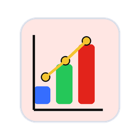

Register once
Use the Microsoft Form to share your contact details, learning goal, GitHub readiness, and consent.
Learn sport analytics by doing
A guided public resource for learning Python, data concepts, and sport analytics through small practical wins.
Recommended start
You will begin with rows, columns, files, and a small sports dataset before writing your first Python functions.
How signup works
Use the Microsoft Form to share your contact details, learning goal, GitHub readiness, and consent.
The form confirmation points you to SAX101-01, where GitHub Classroom creates your private activity repo.
Read the lesson, edit the starter code, run the tests, and write a short interpretation of your output.
Your learning path
Start with the two SAX101 foundations. From there, the course grows into
SAX301 applied sport science modules and SAX201 research paper
replication studies. The Master of Sport Analytics is the formal study pathway.
Working With Your First Sports Dataset. Rows, columns, CSV files, and first Python checks.

Summarising and Visualising Sports Data. Group, export, plot, and explain a simple output.
Applied sport science coding modules using synthetic data for profiling, monitoring, reporting, and context.
Research paper replication studies that rebuild one bounded result, then interpret the method and caveats.
Explore the formal La Trobe pathway when you are ready for deeper training.
Explore the MSA